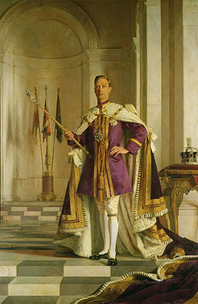
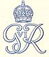
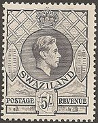
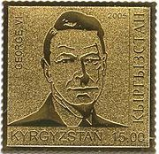
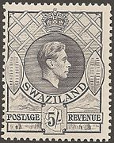
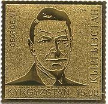

Содержание:
| George VI | |
|---|---|
|  | |
| Король Великобритании и Северной Ирландии |
|
| Коронация: | 12 мая 1937 |
| Предшественник: | Эдуард VIII |
| Преемник: | Елизавета II |
| Император Индии |
|
| Коронация: | не короновался |
| Предшественник: | Эдуард VIII |
| Преемник: | титул упразднен |
| Глава Содружества наций |
|
| Предшественник: | титул учреждён |
| Преемник: | Елизавета II |
| Вероисповедание: | Протестантизм |
| Рождение: | 14 декабря 1895 |
| Смерть: | 6 февраля 1952 (56 лет) Сандрингем, графство Норфолк |
| Место погребения: | капелла Св. Георгия, Виндзорский замок, Беркшир |
| Род: | Виндзорская династия |
| Отец: | Георг V |
| Мать: | Мария Текская |
| Супруга: | Елизавета Боуз-Лайон |
| Дети: |
1. Елизавета |
| Монограмма: |  |
Биография
До вступления на престол
Второй сын короля Георга V и его супруги, королевы Марии. У Альберта было четверо братьев: будущий король Эдуард VIII (1894—1972), Генри, герцог Глостерский (1900—1974), Георг, герцог Кентский (1902—1942), принц Джон (1905—1919), страдавший эпилепсией и аутизмом, и сестра Мария (1897—1965), в замужестве графиня Харвуд. По характеру Альберт был скромным и застенчивым человеком, к тому же страдал от сильного заикания. Однако он упорно занимался под руководством австралийского логопеда-самоучки Лайонела Лога и в результате почти полностью избавился от недуга. Образование получил в Осборне и Королевском военно-морском училище в Дортмуте; в 1915 году получил звание мичмана и затем младшего лейтенанта. Участвовал в Ютландском сражении в качестве командира орудийной башни на линкоре «Коллингвуд». Дальнейшей службе на флоте помешали болезни: сначала приступ аппендицита, затем язва желудка. В марте 1918 года был переведен в морскую авиацию Королевских военно-воздушных сил, служил летчиком на западном фронте, достиг должности командира звена. После войны в течение 1919 года изучал историю и экономику в Тринити-колледже Кембриджского университета. В июне 1920 года стал герцогом Йоркским, 26 апреля 1923 года женился на леди Елизавете Боуз-Лайон, дочери 14-го графа Стратморского. С ней он познакомился ещё в 1905 году (5-летняя Елизавета угостила 10-летнего Альберта засахаренными вишнями с торта). В семье родились двое детей: 21 апреля 1926 года — принцесса Элизабет-Александра (будущая королева Елизавета II), а 21 августа 1930 года — принцесса Маргарет Роуз. В 1924—1925 годах герцог и герцогиня посетили Уганду и Судан, а в 1927-м — Австралию (в Канберре Альберт открыл здание австралийского парламента) и Новую Зеландию.
Правление
После отречения брата Эдуарда VIII 11 декабря 1936 года герцог Йоркский стал королём Георгом VI; короновался 12 мая 1937 года — в день, ранее намеченный для коронации старшего брата. В отличие от отца, Георг VI не был возведён на престол в Дели как император Индии. Спустя сутки после вступления Георга VI на престол парламент Свободного государства Ирландия принял закон, фактически устранивший власть британского короля на территории Ирландии. В мае — июне 1939 года король и королева путешествовали по Канаде и посетили США. В преддверии Второй мировой войны король неоднократно намеревался лично обратиться к Гитлеру с «умиротворяющим» посланием, но неизменно получал отказ премьер-министра Чемберлена, считавшего, что его дипломатии будет вполне достаточно. В мае 1940 года король с большой неохотой поручил формирование нового правительства Уинстону Черчиллю, к которому относился с предубеждением. Однако затем их отношения стали очень тёплыми: король и премьер-министр каждый вторник встречались за ланчем, обсуждая важные вопросы в непринуждённой обстановке. Впоследствии монарх говорил, что лучшего премьер-министра, чем Черчилль, не могло быть.
Вторая мировая война
В годы Второй мировой войны королевская чета постоянно посещала войска, военные предприятия, доки и госпитали по всей стране. В декабре 1939 года король прибыл в расположение британской армии во Франции, а в июне 1943-го с борта самолета «Авро Йорк» вёл наблюдение за войсками союзников в Северной Африке. Он побывал также в Алжире, Триполи и на Мальте. В 1944 году Георг побывал в Нормандии — спустя 10 дней после высадки там войск союзников; в июле находился в южной части Италии, а в октябре — в Бельгии и Голландии. В 1940 году резиденция монарха неоднократно подвергалась бомбовым ударам с воздуха; 12 сентября немецкая бомба взорвалась в 20 метрах от Букингемского дворца, что отразилось на здоровье короля: он не мог читать, часто с беспокойством смотрел на небо. В случае оккупации Великобритании королевскую семью предполагалось эвакуировать в Канаду. Однако сам король уезжать не собирался: он намеревался остаться в стране и участвовать в Сопротивлении. С этой целью в 1940—1941 годах король регулярно упражнялся в стрельбе из разных видов оружия. Несмотря на то что Великобритания была союзницей СССР, король с большой настороженностью относился к союзнику по коалиции.
Последние годы и смерть
В 1945 году после назначения премьер-министром Клемента Эттли король оказывал значительное влияние на главу правительства, в частности, настоял на том, чтобы министром иностранных дел был назначен известный своими антикоммунистическими взглядами Эрнст Бевин. Также Георг был против широкой национализации промышленности, начавшейся при лейбористах. 1 февраля 1947 года Георг VI, королева и принцессы отправились из Англии морем с государственным визитом в Южную Африку. Последние годы царствования Георга при лейбористском правительстве Эттли были ознаменованы ускорившимся распадом Британской империи и превращением её в Содружество наций. В 1948 году полную независимость получила Индия, в 1949-м — Ирландия. Предоставление Индии независимости вызвало большое недовольство Георга. С неохотой он дал в ноябре 1947 года и согласие на брак дочери Елизаветы, считая принца Филиппа Маунтбеттена не слишком блестящей партией. Через неделю, 6 февраля, Георг VI умер в Сандрингеме во сне от коронарного тромбоза. Елизавета вернулась из Кении уже как королева. В 1951 году к власти вернулся Черчилль, всегда пользовавшийся поддержкой и благосклонностью короля. В 1948 году королевская чета планировала путешествие в Новую Зеландию и Австралию, которое было отложено из-за ухудшившегося состояния здоровья короля. У него был обнаружен рак лёгких (стресс времён войны пагубно сказался на здоровье монарха, который, кроме того, очень много курил; в сентябре 1951 года ему удалили одно лёгкое). 29 января 1952 года Георг, несмотря на советы врачей, приехал в аэропорт проводить дочь Елизавету на отдых в Кению и сказал её бывшей няне: «Ради меня, присмотрите за Лилибет!»
Воинские звания и титулы
Король Георг VI был удостоен следующих воинских званий:
Награды
Британские:
Иностранных государств:
Память
В честь Георга VI были выпущены памятные монеты и почтовые марки.
 


